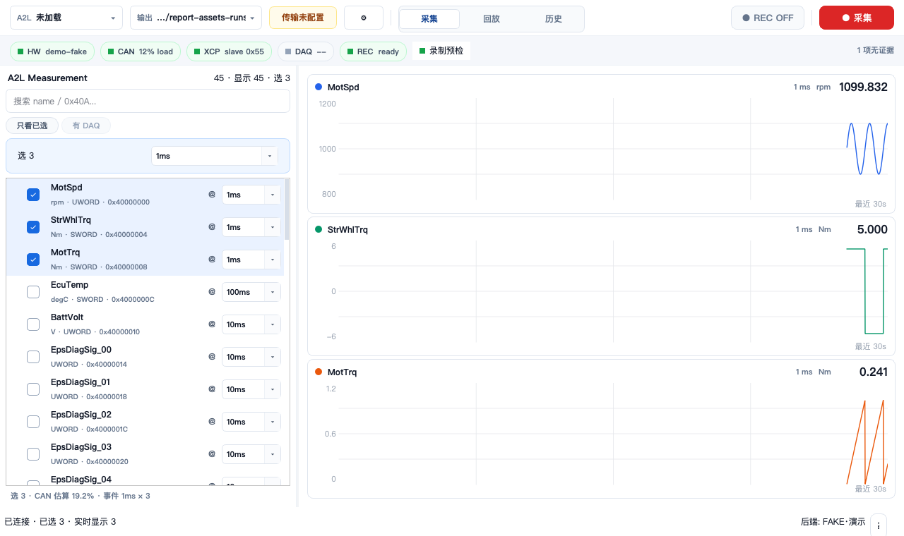
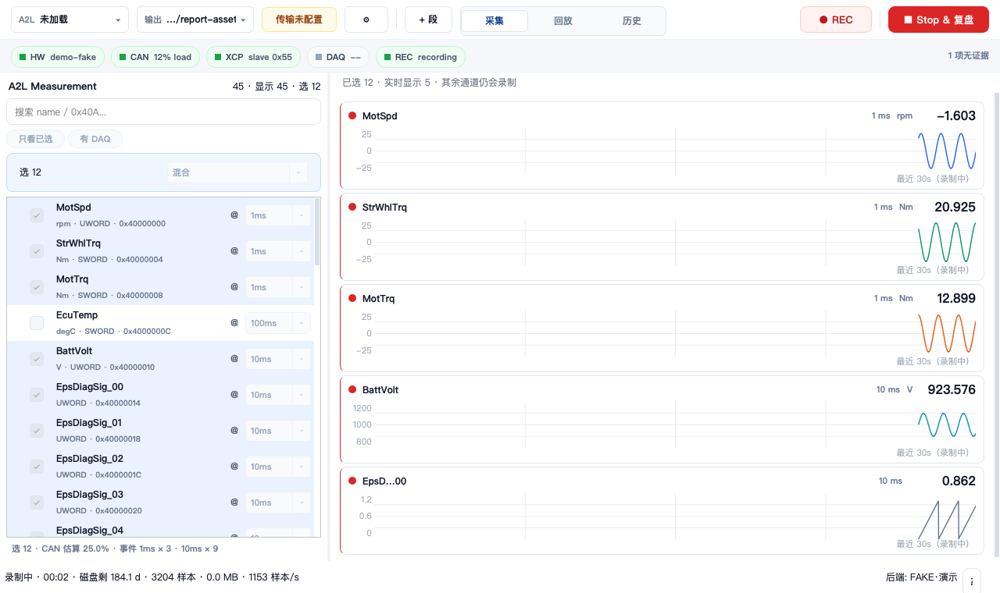

MF4 采集 Cockpit：实时卡时间轴、坐标、聚焦与多通道报告
结论
当前截图是既有“固定最近 30 秒、最新点贴右”的正确实现结果，但它不适合刚启动时的可读性；Y 网格与刻度确有错位；单击聚焦尚不是 TimeDomain 级查看；默认 5 卡之外的通道没有足够直接的查看入口。建议单独立项为 Live Focus & Monitoring P1，不要在现有卡片绘制逻辑上零散堆控件。
证据与边界
- 已运行：
tests/acquisition_ui/test_live_cards.py -q，结果 46 passed in 0.62s。 - 截图：来自当前 Cockpit tour 的 FAKE 后端/合成数据，验证 widget 及显示路径；不等同于 ECU 实车采集证据。
- 既有 spec：固定 30 秒窗口、紧凑卡片、默认 5 张实时卡是当前 P0 契约；Focus View（缩放/游标/手动轴）被明确列为后续非目标。因此本报告的 Focus View 是建议，不是已交付功能。
1. 为什么曲线从右侧出现
当前行为：按设计实现，非采集延迟。每张卡将最新的 stream timestamp 作为
t_anchor，把 X 映射到固定 [t_anchor - 30s, t_anchor]。当卡片刚收到 5 秒数据，曲线理应只位于右侧 5/30 区域；左侧是真实尚未收到的历史时间，不能伪造数据填充。
| 证据 | 含义 |
|---|---|
live_cards.py:383–414 | 投影公式直接以固定 window 计算 X；文档明确说明“最近 5 秒”会贴右而非拉满。 |
tests/acquisition_ui/test_live_cards.py:426–438 | 测试明确断言：仅有最近 5 秒数据时，最早点 x > 480、最新点贴近右缘。 |
spec …live-preview…:74–92 | 现行契约要求短数据只占右侧比例，左侧留真实空白。 |
建议：增加“预热铺满”阶段
- 首次样本到满 30 秒前，显示窗口为实际已接收时长（仍按真实 stream timestamp 比例映射），曲线铺满可用宽度。
- 文案从“最近 30s”改为
已接收 4.8s / 最大 30s；达到 30 秒后切换为现有“最近 30s”。 - 不插值、不掩盖真实 gap；只有启动前的“未知历史”不再被当作可视坐标区域。
代价：预热期 X 比例会随时间增长而改变；收益：启动后不再像曲线从右边“冒出”，更符合操作者的首眼预期。建议采用。
2. 为什么最大/最小刻度没有网格线
根因：网格与实际 nice ticks 是两套逻辑。绘制代码在得出数据范围前，固定画 25%、50%、75% 三条内部线；随后才计算
lo / hi / ticks 并只绘制刻度文字。因此顶部与底部的最大/最小数值没有对应横线，截图所见属实。
| 当前实现 | 应有行为 |
|---|---|
paintEvent 在 live_cards.py:804–814 画固定分数网格。 | 先计算 _spark_scale() 返回的 ticks，再以每个 tick 的实际 Y 位置绘制网格。 |
live_cards.py:845–847 只调用 _paint_y_ticks 画标签。 | 每个 tick 都要有标签和同一像素位置的横线；lo/hi 的边界线应略向内 inset，避免被卡片 frame 裁掉。 |
| 网格与标签碰巧在中间相近，边界必然不对齐。 | Y 范围、tick、网格必须由同一个 scale 对象生成。 |
TimeDomain 可复用的不是控件，而是语义
TimeDomain 的 reset_view_to_data_extents() 采用真实原始数据范围、nice frame，并要求轴边界与网格一致（pg_canvas/canvas.py:1688–1725）。其 fit_y_to_visible_x() 保持当前 X 窗口，只对其中的真实有限样本做一次 Y 拟合（1737–1755）。Cockpit 应复用这两条语义和共享 tick math，不能直接依赖整个 TimeDomain UI。
验收：常值、正值、跨零、负值各一例；每个可见 Y tick 都有一条网格；顶部/底部 tick 不被裁切；窄卡仍按现有规则隐藏 Y 文字但不得产生错误网格。
3. 单击放大后的曲线：当前能力与建议
| 项目 | 当前 | 建议的 Focus View |
|---|---|---|
| 单击 | LiveSignalCard.mousePressEvent 发出通道名；focus_channel() 只保留这一张卡。 | 保留此入口，但切换为专用单通道查看状态，而不是仅隐藏同级卡片。 |
| X | 固定最近 30 秒，无缩放/跟随状态。 | 默认跟随最新；用户拖动/缩放后暂停跟随；提供“返回最近 30 秒”。 |
| Y | 每次卡片 refresh 都按当前缓冲自动估算，用户不能固定手动范围。 | 默认“Y 适应当前可见 X”；提供一次性 Y 适应，手动改 Y 后不被下一帧覆盖。 |
| 操作 | 仅有“返回全部”。 | 提供 Y 适应、全图/最近30秒、跟随开关、上一通道/下一通道、返回概览。 |
代码证据：live_cards.py:1265–1268 只做 click→activated；1591–1638 只对已在 cards 集合里的通道进行 focus；现行 spec 也将完整 Focus View 标为非目标。
4. 超过 5 个通道时怎么办
当前“5 张”是默认值，不是硬上限。默认取选择顺序前 5 个；后续通道依旧会录制。可是把一个后续通道“固定到实时显示”会直接追加至手动 pin 列表，当前代码没有 5 槽约束，因此会出现第 6、7 张卡，需要滚动才能看到；而未 pin 的后续通道不能直接被当前 Focus 机制打开。
| 证据 | 结论 |
|---|---|
window.py:872–892 | 未定制时取前 DEFAULT_LIVE_PIN_COUNT；定制后 pin_channel() 仅 append，不限数量。 |
window.py:924–935 | 中心只为 pin 建立卡片；其余通道显示“仍会录制”的提示。 |
left_pane.py:360–368 | 后续已选通道有“固定到实时显示”右键项，但没有“替换槽”或“聚焦查看”。 |
推荐模型：5 个概览渲染槽 + 所有已选通道可聚焦
- 概览硬上限 5：保持现有 1ms × 5 卡 × 30fps 性能边界，不允许无意追加第 6 张卡。
- 监视集合显式化：左栏或 summary 提供“实时监视 5/5 · 管理”；选中后续通道时可选择“替换槽位”，不使用隐式 append。
- 聚焦不依赖 pin：后续已选通道可通过左栏“在焦点中打开”，Focus View 提供上一/下一通道，顺序来自当前 selection。
- 数据边界：所有已选通道仍由采集/写盘路径记录；为非 pin 的已选通道保留有界、轻量的显示缓存，保证打开焦点时有最近窗口，而不是从零等待。缓存上限与性能需单列压测。
推荐实施顺序
| 优先级 | 批次 | 范围与验收 |
|---|---|---|
| P0 | tick 驱动网格 | 网格/标签统一从 scale ticks 生成；截图验证顶、中、底均对齐；不改变数据、采集、写盘或窗口语义。 |
| P1 | 30 秒预热窗口 | 0–30 秒使用真实增长窗口，满窗后进入滚动窗口；更新标签和比例测试；验证 gap 不被填充。 |
| P1 | Focus View | 单击进入；带 Y 适应、最近 30 秒、跟随最新、上一/下一通道；手动轴与自动拟合互不覆盖。 |
| P1 | 5 槽监视管理 | pin 不再无限 append；“替换槽/聚焦后续通道”可达；测量 1ms × 5 卡性能和非 pin 缓存内存。 |
由于 Focus View 与可配置监视集合超出现有 spec 的明确非目标，下一步应先更新 spec/plan，再改代码；不能把它们作为当前卡片 painter 的临时补丁。
渲染证据
{kind=link}

{kind=link}
